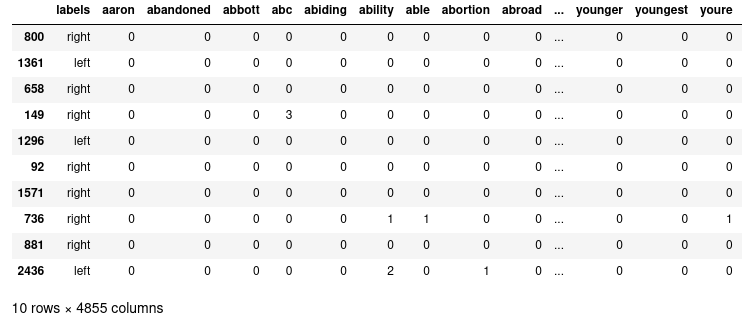
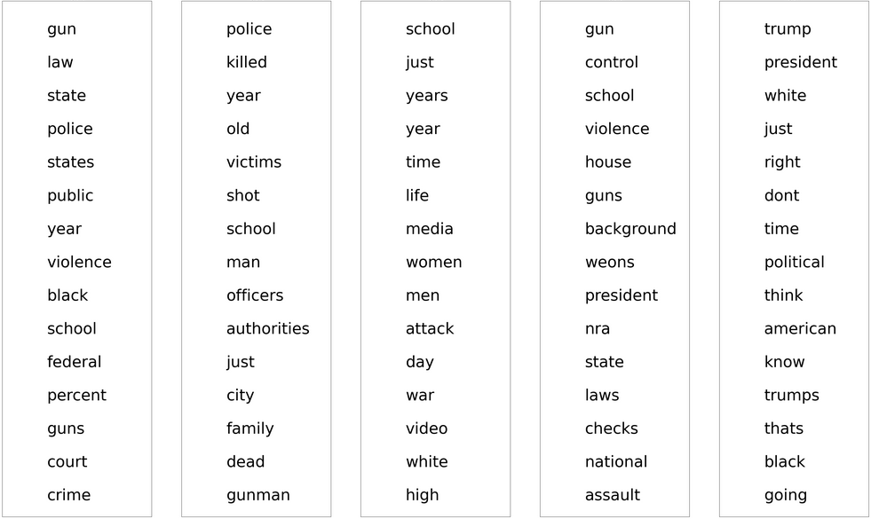
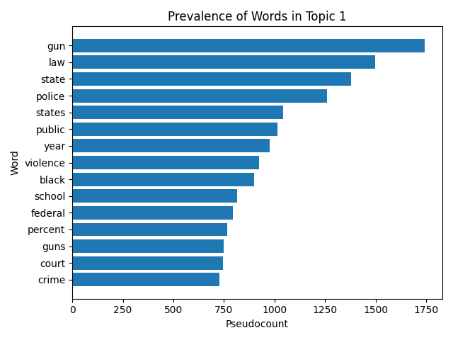
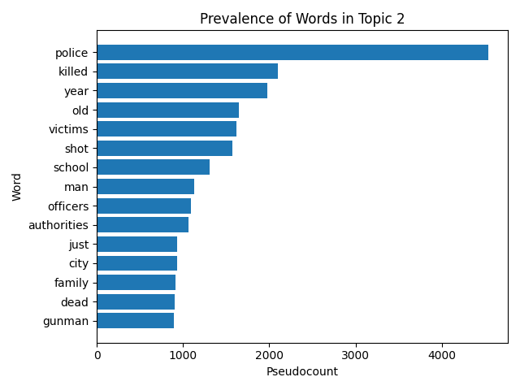
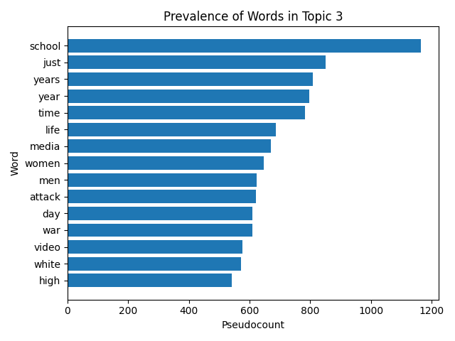
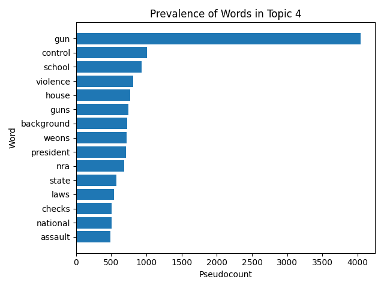
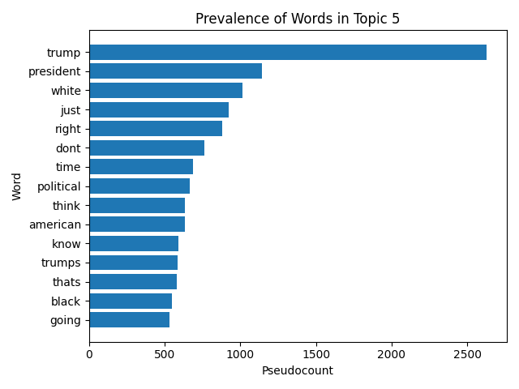

<div class="main-background">
    <div class="container">
        <app-text-mining-navigation/>
        <h1 style="text-align: center;">Latent Dirichlet Allocation</h1>

        <p>
            <em>All code can be found <a target="_blank" href="https://github.com/daniel-ethridge/text-mining-project/tree/main/unsupervised-learning">here</a>, and all data can be found <a target="_blank" href="https://github.com/daniel-ethridge/text-mining-project-data">here</a>.</em>

        <h2>Overview</h2>
        <p>
            Latent Dirichlet Allocation (LDA) is an unsupervised learning method that clusters documents into a user specified number of groups, often referred to as topics. LDA is often used to find subsets of words across a set of documents that form a topic. Here, it will be used to find further insight into various clusters that were found while performing <a href="/portfolio/text-mining/clustering">clustering</a>. During clustering, a choice of five clusters seemed to be the best. Thus, with LDA, finding the common words and documents in five topics will help further illuminate the clustering analysis.

        <h2>Data Prep</h2>
        <p>
            LDA requires a matrix with count data. The specific dataframe to use is <a href="https://github.com/daniel-ethridge/text-mining-project-data/blob/main/clean/count-500.csv">here</a>. This particular dataframe was created as part of the initial preprocessing of the data. Information can be found <a href="/portfolio/text-mining/data-prep">here</a>. The data before (top) and after (bottom) cleaning is shown below.

        <div class="row row-cols-1 text-center">
            <div class="col mb-4">
                
            </div>
            <div class="col">
                
            </div>
        </div>

        <h2>Code</h2>
        <p>            
            The result of LDA is both a measure of how well each word in the vocabulary fits within all five topics and a measure of how well each document fits within a topic. In sklearn, this is equivalent to the components attribute of the LatentDirichletAllocation class and the output of the fit_transform method, respectively, as noted in the example code below. More detailed code (including for visualization) is linked at the top of the page.

        <pre><code>
            import sklearn.decomposition as decom

            # Prior code to create a matrix of word counts and save to df

            # Create LDA object and fit the model
            lda = decom.LatenDirichletAllocation()
            lda.fit(df)

            # Amount that each word belongs to a topic
            word_topics = lda.components_

            # Amount that each document belongs to a topic
            document_topics = lda.transform(df)
        </code></pre>

        <h2>Results</h2>
        <p>
            The main goal is to learn what the five groups from the clustering might be. Granted, the clusters are almost certainly not going to be identical especially given the potential for overlap in LDA and the lack thereof with the clustering techniques. However, at the very least, clustering informed that five topics should be found, and they are pictured below.

        <div class="text-center mb-5">
            
        </div>
        
        <p>
            We can additionally view the prevalence of each word in each topic. The plots below show each word and their "pseudocount". The term pseudocount comes from the <a href="https://scikit-learn.org/stable/modules/generated/sklearn.decomposition.LatentDirichletAllocation.html">sklearn documentation</a> and describes the component_ attribute as a pseudocount describing how many each word is assigned to each topic.

        <div class="row row-cols-md-2 row-cols-1 text-center">
            <div class="col mb-4">
                
            </div>
            <div class="col mb-4">
                
            </div>
            <div class="col mb-4">
                
            </div>
            <div class="col mb-4">
                
            </div>
            <div class="col mb-4 mx-auto">
                
            </div>
        </div>

        <h2>Conclusions</h2>
        <p>
            Given these topics, we can begin to understand what major subissues might be discussed in the context of mass shootings. The first and fourth topics are perhaps similar and refer to gun control or gun laws and the debate around them. The fourth topic especially likely contains debate around gun reform given the words "background" and "check" as well as "nra", obviously referring to the National Rifle Association. The second topic likely refers to news stories concerning details about mass shootings, while the third topic seems to revolve specifically around school shootings. The fifth topic undoubtedly pertains to President Donald Trump and perhaps also race given the inclusion of the words white and black. 
    </div>
</div>